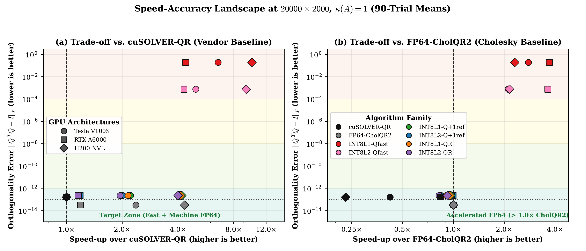
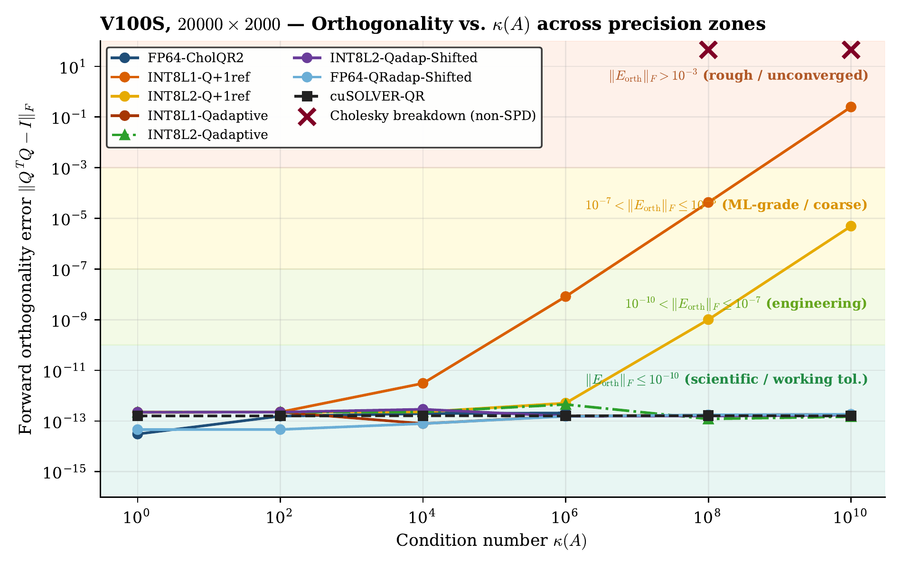
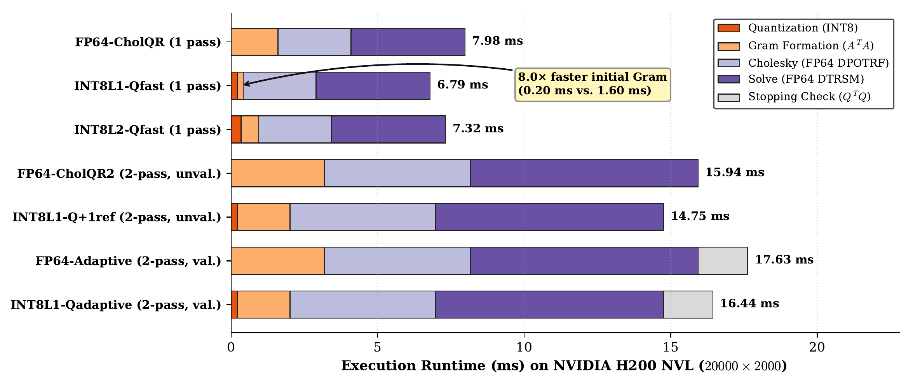
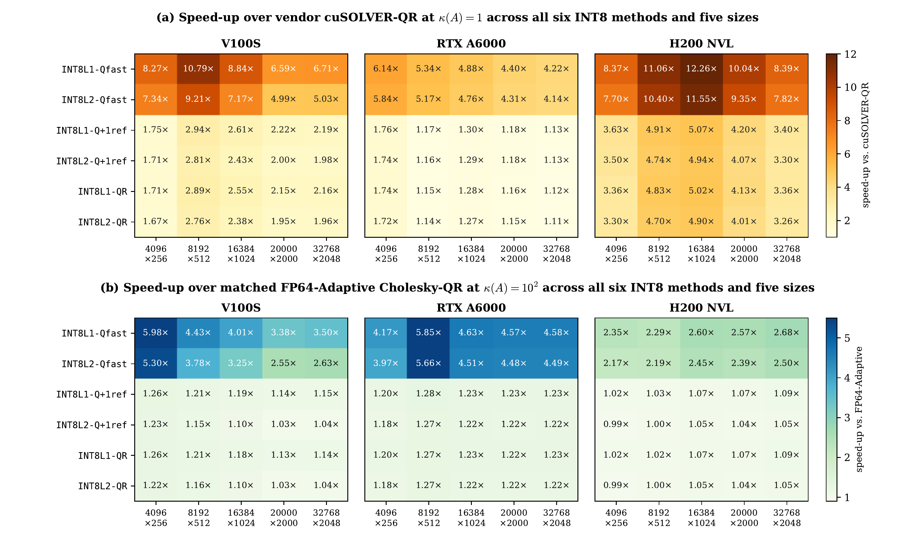
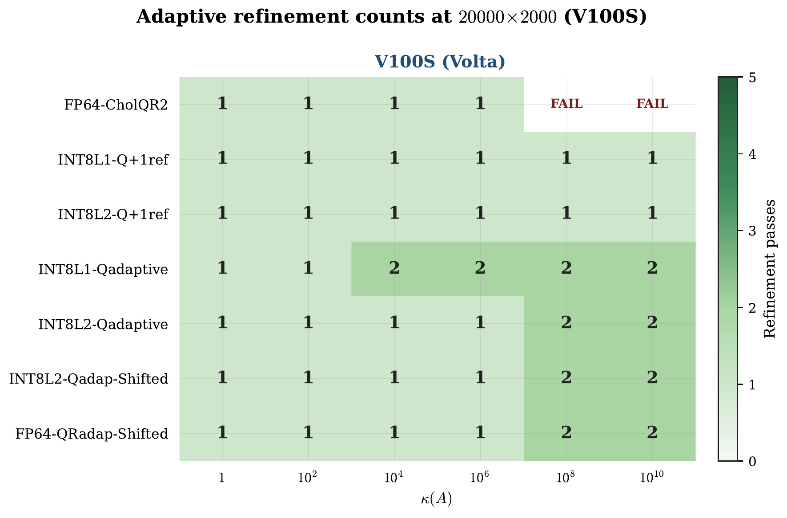
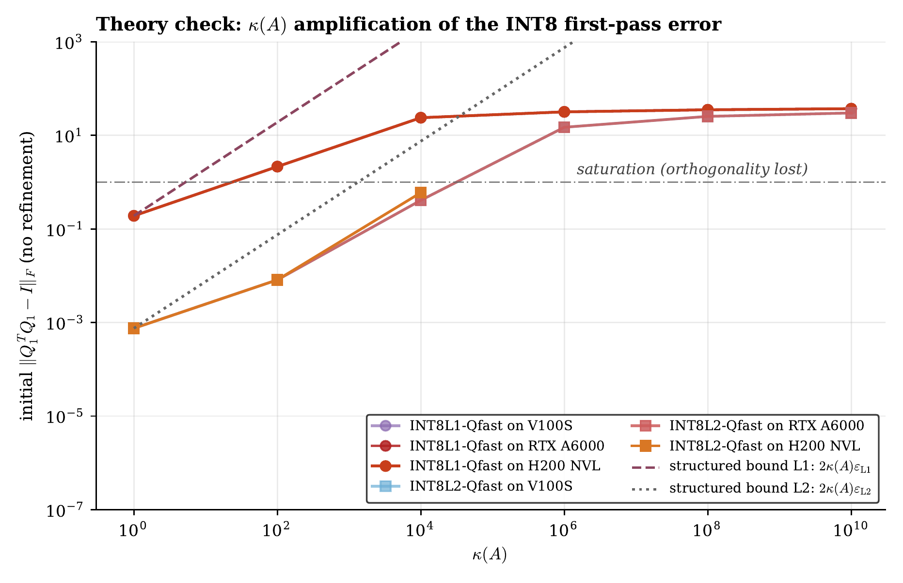
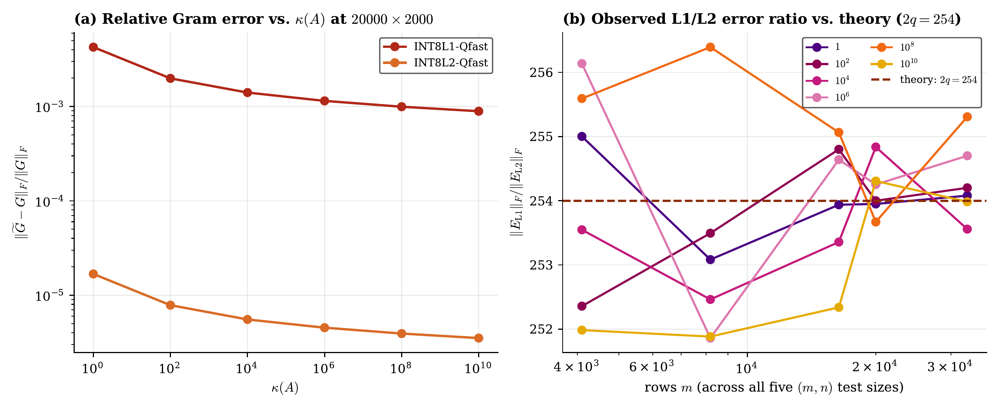

Low-bit start. High-precision finish.
Abstract. Conventional Cholesky-QR methods achieve high BLAS-3 efficiency for tall-and-skinny matrices (\(m \gg n\)) on GPUs, but suffer from numerical instability and Cholesky breakdown on ill-conditioned inputs. We present a mixed-precision Cholesky-QR pipeline that forms a coarse initial Gram matrix using 8-bit integer (INT8) matrix multiplication (via Tensor Cores or DP4A vector instructions) with exact INT32 accumulation, followed by FP64 Cholesky factorization and iterative refinement (with optional diagonal shifting) to recover working-precision orthogonality.
We analyze two INT8 initializers: a single-product scheme (L1) and a residual-corrected scheme (L2). Our structured perturbation analysis shows that the first-pass loss of orthogonality grows linearly with the matrix condition number prior to saturation (\(\delta_L = \kappa(A)\varepsilon_L\)), and that L2 quantization reduces the leading residual scale by a factor of \(254\), extending the admissible condition-number range for single-pass refinement by roughly two orders of magnitude. Benchmarks across NVIDIA V100S, RTX A6000, and H200 NVL GPUs on synthetic and SuiteSparse matrices show that shifted adaptive variants preserve double-precision orthogonality up to \(\kappa(A)=10^{10}\)---where standard unshifted FP64-CholQR2 breaks down---at a runtime comparable to shifted FP64 Cholesky-QR.
By accumulating dot-products exactly into 32-bit signed integers, floating-point summation drift is completely abolished (\(\Delta G_{\mathrm{acc}} = 0\)). The symmetric Gram structure is preserved (\(B_L^T B_L \succeq 0\)), preventing premature indefinite breakdown.
The L2 initializer forms a primary INT8 pass plus a quantized residual slice, cutting leading quantization noise by a factor of \(2q = 254\) (\(\approx 48\) dB). This shifts the single-refinement threshold from \(\kappa(A) \approx 10^2\) to \(\kappa(A) \approx 10^4\).
A closed-form diagonal shift \(s_{\mathrm{var}} = \frac{m}{12}\sum_{j=1}^n \alpha_{2j}^2\) based on uniform rounding variance eliminates Cholesky breakdowns on ill-conditioned problems, guaranteeing 100% completion up to \(\kappa(A) = 10^{10}\).
Drag the condition number \(\kappa(A)\) slider to observe how the Gram matrix condition number grows quadratically, how INT8 quantization error scales, and how many refinement passes are required to achieve machine precision.







The benchmark harness is self-contained with no external dependencies beyond the standard CUDA Toolkit and Python 3. Build and validate on your local GPU in seconds:
To reproduce the paired synthetic condition-number sweep:
python3 scripts/run_suite.py --synthetic-only --synthetic-grid config/synthetic_grid.json --warmups 5 --trials 90 --output both --results results/synthetic_suite
To run on real-world SuiteSparse matrix inputs (included in data/):
python3 scripts/run_suite.py --datasets-only --datasets-config config/datasets.json --warmups 5 --trials 30 --results results/suitesparse_suite
@article{sahraneshinsamani2026qr8,
title = {Mixed-Precision {Cholesky-QR} with {INT8} Initialization and {FP64} Refinement for Very Tall Matrices on Heterogeneous {GPUs}},
author = {Sahraneshinsamani, Nima and Aliaga, Jos{\'e} I. and Catal{\'a}n, Sandra and Herrero, Jos{\'e} R.},
journal = {SIAM Journal on Scientific Computing (SISC)},
note = {Submitted, Special Section on Iterative and Multigrid Methods},
year = {2026}
}